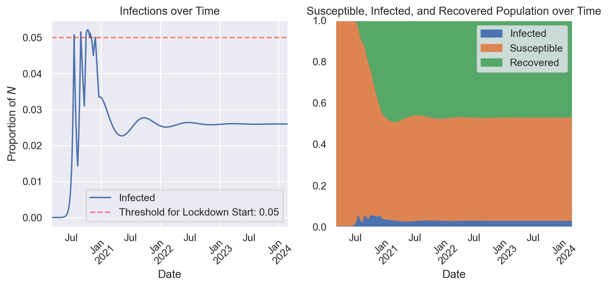
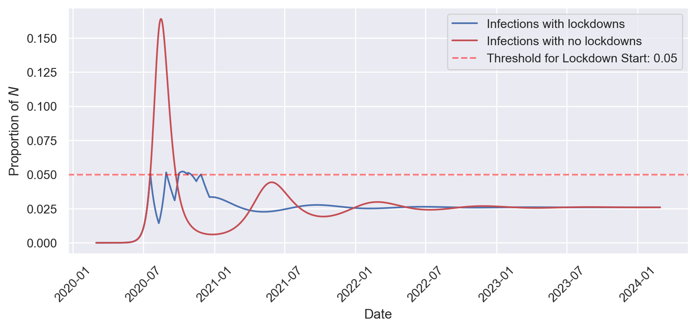
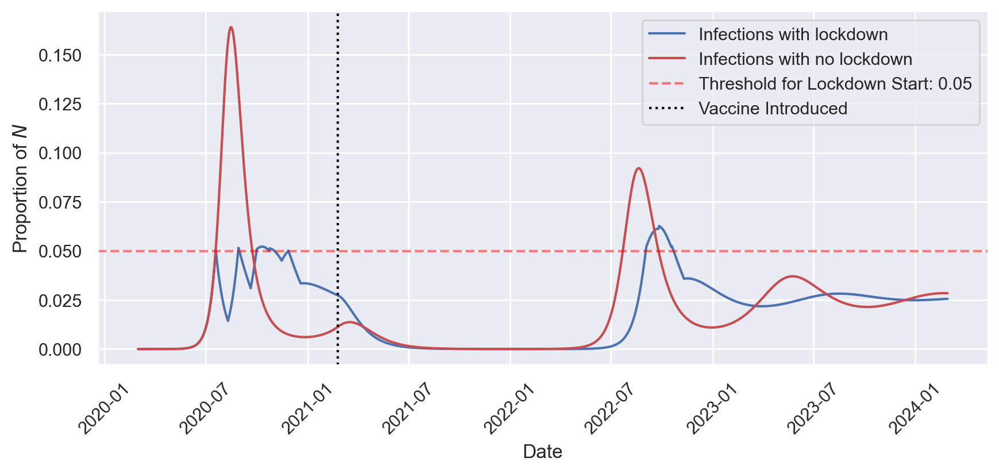

The Policy Problem
During the COVID-19 pandemic, policy makers around the world have developed a variety of tools for combating the virus: lockdowns and strategic re-openings, testing, contact-tracing, masking, and vaccination, to name a few (Brooks 2020). In this memo, I will examine the effectiveness of lockdowns and vaccination specifically, with an eye towards how they might be used during future pandemics. I find that lockdowns are an effective pandemic response in so far as they considerably reduce infections. I also find that a vaccine that provides temporary immunity cannot effectively end a pandemic with only one vaccination campaign. During future pandemics, policy makers should be ready to institute lockdowns, especially early in the pandemic, and prepare the public for yearly vaccine boosters once a vaccine has been developed.
The Simple SIR Model
In order to model various pandemic responses, I implement an altered version of a simple “SIR” model - Susceptible–Infectious–Recovered - as defined in (Bird 2020). I adapt the SIR model to include a number of specific characteristics of the COVID-19 pandemic: diminishing immunity for those who have recovered from the virus, policy responses in the form of limited-length lock-downs with diminishing effectiveness, and the eventual introduction of a vaccination campaign. The key features of the model are defined as follows.
Groups, Parameters, and Assumptions
There are three population groups: there is a total population, to be expressed as \(1\), and on any given day, \(t\), there is a percentage of individuals in the population who are susceptible to the disease - \(S_t\) - a percentage of individuals currently infected - \(I_t\), and a percentage of individuals who have been infected, recovered, and cannot be infected again - \(R_t\). Those three groups represent the entire population: \[ 1 = S_t + I_t + R_t \]
Along with the groups, there are three key parameters that describe the behavior of the virus in our population:
- \(\beta\) describes the growth in infections each day.1
- \(\nu\) is the percentage of the infected population that recovers each day
- \(\lambda\) is the percentage of the recovered population that loses their immunity each day (vaccinated or previously infected)
Using these population groups and the key parameters, \(\beta\), \(\nu\), and \(\lambda\), I produce the following basic model.
The Basic Model
On a given day, the number of infected individuals is defined as follows: \[ \begin{align*} \text{Infected Today} &= \text{Infected Yesterday} + \text{New Infected Today} - \text{New Recovered Today} \\ I_t &= (I_{t-1}) + (I_{t-1} \beta S_{t-1}) - (I_{t-1} \nu) \end{align*} \]
The number of people who have recovered from the virus and thus have temporary immunity is: \[ \begin{align*} \text{Recovered Today} &= \text{Recovered Yesterday} + \text{New Recovered Today} - \text{New Susceptible Today}\\ R_t &= (R_{t-1}) + (I_{t-1} \nu) - (R_{t-1} \lambda) \end{align*} \]
The number of individuals susceptible to the virus is those who are not infected or recovered: \[ \begin{align*} S_t &= 1 - I_t - R_t \end{align*} \]
Assumptions
This model starts with 0.00001% of the population infected. I assume that individuals interact with an average of 10 other people each day, and 2% of those interactions result in virus transmission. Once infected, there is an average recovery time of 10 days. Those who have recovered from infection are expected to retain their immunity for 6 months on average.
Possible Policy Responses
Lockdowns can be implemented by the government, but to have their costs reflected in the model, they can be sustained for no more than three weeks. They have the effect of reducing contacts between individuals by 75%, but have diminishing effectiveness. Each subsequent lockdown is half as effective as the previous one (the first lockdown reduces the contact rate from 10 to 2.5, the second from 10 to 5, the third from 10 to 7.5), though there is a minimum effectiveness, where no matter what number lockdown the sociey is on, there will at least be a 20% reduction in contact under lockdown. Lockdowns will be declared whenever the infected population grows beyond some threshold.
I apply the model to two distinct scenarios under which rolling lockdowns are implemented: one where no vaccine is ever developed to combat the virus and one where a vaccine is developed after one year and rolled out incrementally.
Scenario 1: Lockdowns, No Vaccination
The first scenario I examine is the use of rolling lockdowns, motivated by infections growing beyond a 5% threshold. In this scenario a vaccine is never developed, so lockdowns are essentially the only tool available to policy makers.
Figure 1 shows the outcome of this scenario. As infection transmission passes the threshold, the government calls for a lockdown, which promptly reduces infections. However, transmission has enough momentum to quickly grow again, triggering a series of lockdowns with diminishing effect. The policy does largely keep the infected population below 5%, and after the initial wave of infections subside the government doesn’t have to call for any more lockdowns. The population experiences a much smaller second wave before the pandemic settles into a sort of equilibrium. About 2.5% of the population stays infected as different individuals contract the disease, recover, gain immunity, and slowly lose that immunity. This equilibrium is unfortunate - the pandemic doesn’t really end in this scenario. However, this strategy is effective, and we can see that most clearly by comparing it to the alternative in which no lockdowns are instituted.

Figure 2 shows that in the absence of any lockdowns, infections grow over 3 times as high during the first wave, and the population later experiences more pronounced second and third waves of infection. One might think that lockdowns merely displace infections, and in Figure 2 we can see a number of areas where the no-lockdowns approach has fewer infections. However, if we compare the sum of infections over this full time period, we see that lockdowns lead to 44% fewer infections.
Scenario 2: Lockdowns, Vaccination
The second scenario I examine again involves the use of rolling lockdowns with a 5% threshold, but now a vaccine is introduced one year into the pandemic. The government’s vaccination campaign is able to vaccinate 1% of the susceptible population each day and once 100% of the susceptible population is vaccinated the government ceases their campaign. Immunity through vaccination wears off after 6 months.

Figure 3 shows that the virus initially grows as previously shown in Figures 1 and 2, but once the vaccine is released in early 2021, the pandemic begins to subside fairly quickly. By late 2021 the pandemic is effectively over. However, vaccine immunity wears off, and given no future vaccination campaigns, there is eventually another wave of infections, This time, repeated lockdowns have diminished the intervention’s effect, so infections rise to their highest point of the entire pandemic so far. After this 2022 wave infections diminish and settle into an equilibrium around 2.5%, as in previous models.
In this scenario, I find that lockdowns lead to 37% fewer new infections. This is a smaller effect than with no vaccine, largely because with or without lockdowns the vaccine has a large impact on reducing infections.
Policy Implications
The principal policy implication of this modeling approach is that lockdowns do a good job of preventing infections. Even only a few early lockdowns with diminishing effectiveness can make a significant dent in the total infections that occur over the course of a pandemic. This is true in cases where a vaccine eventually becomes available, and in the absence of any vaccine. The modeling approach also shows that a vaccine that provides temporary immunity ultimately cannot end the pandemic, and after immunity wears off one would expect future waves of infection. This implies that vaccine booster campaigns are essential to maintaining the positive effects of the vaccine in the longer term.
References
Bird, Alexander. 2020. “A Simple Introduction to Epidemiological Modelling,” January. https://www.academia.edu/42649453/A_simple_introduction_to_epidemiological_modelling.
Brooks, Chris. 2020. “The Hammer and the Dance: Why Reopening Now Will Kill.” Labor Notes. https://labornotes.org/2020/05/hammer-and-dance-why-reopening-now-will-kill.
Footnotes
The reproduction rate, \(\beta\), is the product of the number of interactions between infected individuals and susceptible individuals each day and the percentage of those interactions that will result in disease transmission.↩︎
Citation
BibTeX citation:
@online{amerkhanian2022,
author = {Amerkhanian, Peter},
title = {Policy {Responses} to a {Coronavirus} {Pandemic}},
date = {2022-12-15},
url = {https://peter-amerkhanian.com/posts/SIR/},
langid = {en},
abstract = {I develop a mathematical model to analyze the effects of
policy interventions during a Coronavirus pandemic.}
}
For attribution, please cite this work as:
Amerkhanian, Peter. 2022. “Policy Responses to a Coronavirus
Pandemic.” December 15, 2022. https://peter-amerkhanian.com/posts/SIR/.